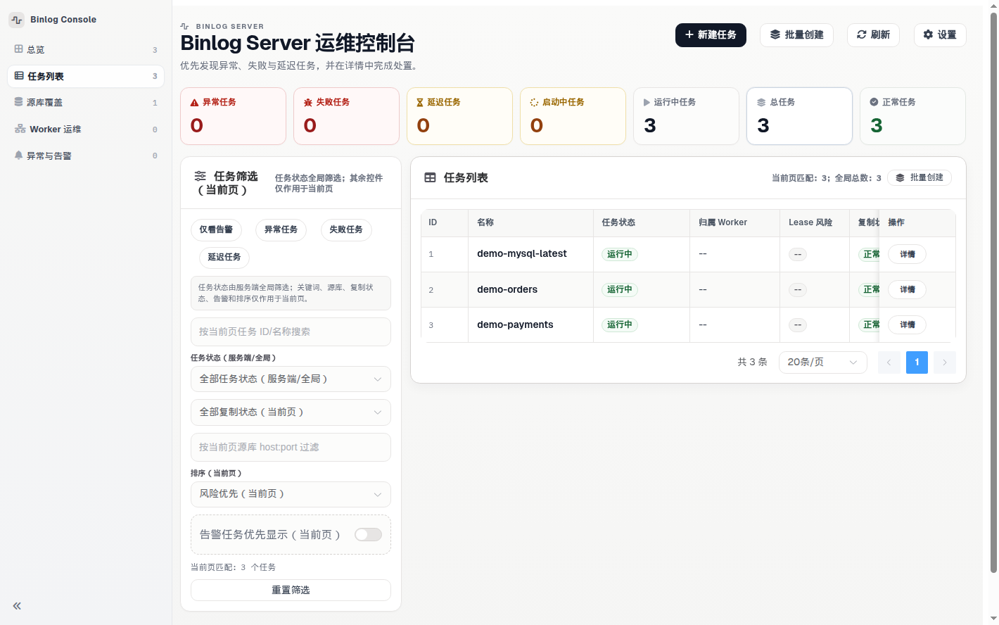
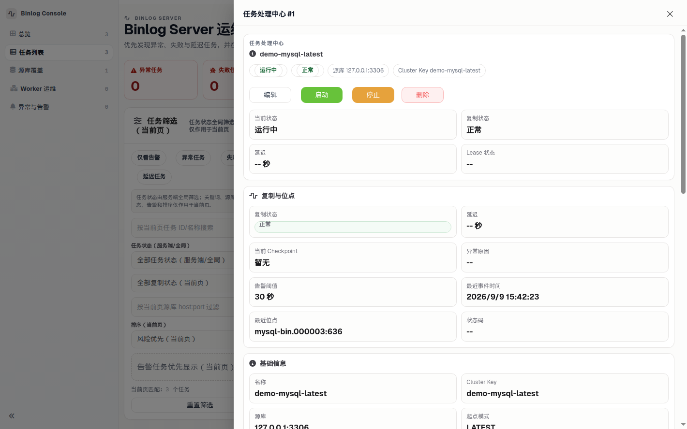
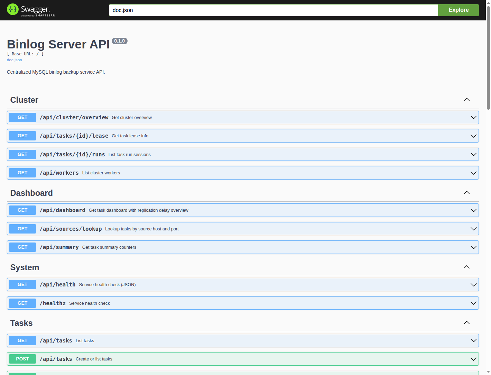

Continuous replication with local fsync-backed checkpoints, multi-worker lease failover, and decoupled S3 archiving. Built for MySQL DBAs who need deterministic RPO and real operational control — not fragile shell scripts.
DURABILITY Local fsync precedes checkpoint advance (zero optimistic progress)
ARCHIVE Decoupled S3 upload (upload failure never stalls binlog capture)
CLUSTER Multi-worker lease ownership with automatic failover & zero split-brain
OBSERVE True lag vs source binlog tip, Prometheus metrics, and embedded Web UI
Operator Console & Interfaces
BinlogServer embeds a production web console and comprehensive REST API directly into the release binary. No separate frontend service to build, deploy, or maintain.

Real-time replication lag, worker assignment, and task state classification across all MySQL sources.

Inspect exact GTID / file-pos coordinates, local segment rotation, and trigger manual S3 archive retries in one click.

Full OpenAPI spec for CMDB automation, CI orchestration, and monitoring integration behind identical auth middleware.
Install & First Backup Path
Packaged release archives contain precompiled statically-linked binaries (`binlog-server`, `migrate`), SQL migrations, and production config templates. Operators do not need Go installed.
Fetch the official static binary, verify its SHA256 checksum, unpack the archive, and boot local evaluation.
VER=0.5.26 OS=linux ARCH=amd64
curl -fsSL -O "https://github.com/Fanduzi/BinlogServer/releases/download/v${VER}/binlog-server_${VER}_${OS}_${ARCH}.tar.gz"
curl -fsSL -O "https://github.com/Fanduzi/BinlogServer/releases/download/v${VER}/checksums.txt"
sha256sum -c checksums.txt --ignore-missing
tar -xzf "binlog-server_${VER}_${OS}_${ARCH}.tar.gz"
cd "binlog-server_${VER}_${OS}_${ARCH}"
# Loopback bind allows unauthenticated evaluation
export BINLOG_SERVER_LISTEN_ADDR=127.0.0.1:8080
export BINLOG_SERVER_DATA_DIR=./data
./binlog-server
d21f62997abd8ba0b97de650802b32c06f565680cde62c0c7b88333c37242f16 binlog-server_0.5.26_darwin_amd64.tar.gz
5556039d09b98a92e7a81cebc6a374632f72fd3e4762e384d951ab036d3686d1 binlog-server_0.5.26_darwin_arm64.tar.gz
d6d63163b36994f2ff473be4f9a981c1ef74d304dd5ad1e2327facf4524d4ae8 binlog-server_0.5.26_linux_amd64.tar.gz
226f2d315e0decc3ab477e295c9c19882d92474cce6885c9fa869bab8aaed933 binlog-server_0.5.26_linux_arm64.tar.gz
Check health probe status and submit your MySQL source specification with explicit retention and start mode.
# Check health probe
curl -fsS http://127.0.0.1:8080/healthz
# Submit backup task (start from source tip)
curl -fsS -X POST http://127.0.0.1:8080/api/tasks \
-H 'Content-Type: application/json' \
-d '{
"name": "prod-mysql-01",
"cluster_key": "prod-cluster-main",
"source": {
"host": "192.168.1.50",
"port": 3306,
"user": "repl",
"password": "your_repl_password",
"flavor": "mysql"
},
"start": { "mode": "LATEST" },
"storage": { "retention_days": 7 }
}'
Trigger stream capture and immediately inspect real master lag, file rotation, and GTID coordinates in the embedded Web UI.
# Start continuous replication (use task id from step 2)
curl -i -X POST http://127.0.0.1:8080/api/tasks/<task-id>/start
# Open Web Console in browser
# http://127.0.0.1:8080/ui/
# Or query live task state via API
curl -fsS http://127.0.0.1:8080/api/tasks
Transition to production with non-negotiable security: AES-256 key, bearer auth token, and dedicated metadata MySQL.
# 1. Initialize dedicated metadata database
export META_DSN='binlog_meta:pass@tcp(10.0.0.15:3306)/meta?parseTime=true'
./migrate up --dsn "$META_DSN" --path ./migrations
# 2. Start production daemon with encryption key
export PRODUCTION=true
export BINLOG_SERVER_META_DSN="$META_DSN"
export BINLOG_SERVER_API_AUTH_BEARER_TOKEN="your-secure-token"
export BINLOG_SERVER_ENCRYPTION_KEY="$(openssl rand -hex 16)"
./binlog-server \
--config config.production.example.yaml \
--encryption-key "$BINLOG_SERVER_ENCRYPTION_KEY"
⚠️ Security notice: Loopback binds allow unauthenticated local testing. Any non-loopback listen address (including `:8080` or `0.0.0.0:8080`) strictly fail-closes at startup unless `api.auth.enabled`, `protect_api`, and `protect_metrics` are enabled.
MariaDB sources must set "flavor":"mariadb". The Console default and the MySQL Quick Start example use mysql. That flavor reads @@server_uuid, which MariaDB does not have, and the task fails immediately.
Architectural Guarantees
DBAs cannot afford optimistic progress or unhandled edge cases. Every component in BinlogServer is built around predictable durability and operational transparency.
Checkpoint offsets advance only after local `fsync` succeeds on disk. A process crash or sudden reboot never causes phantom progress.
S3-compatible upload is asynchronous and best-effort. Cloud storage throttling or outages never stall local replication streams.
Distributed lease locks backed by metadata MySQL ensure only one worker dumps a source at any time, with automatic timeout failover.
Non-loopback binds mandate authentication. `PRODUCTION=true` refuses startup without a 32-byte AES key and encrypts source passwords.
Deployment Topologies
Whether testing locally on a laptop or running hundreds of replication tasks across an enterprise cluster, choose the right architecture without changing binlog format or client protocols.
Single process. Without `meta_dsn`, tasks run in-memory for testing. With `meta_dsn`, tasks, checkpoints, and sealed segments persist across restarts for simple single-node deployments.
Production recommended. Dedicated Control Plane nodes serve API/UI/Scheduler, while a pool of headless Workers claim task leases and perform binlog replication with automatic crash failover.
A hybrid node running both the Control Plane API and Worker runner backed by a shared metadata MySQL. Ideal for small, cost-effective high-availability clusters.
Data Path & Lifecycle
Every step in the pipeline adheres to explicit transactional boundaries, making disaster recovery and auditing completely transparent.
Support `LATEST` (start at source tip), `FILE_POS` (specific binlog file and offset), or `GTID` sets without losing consistency.
Replication lag is evaluated directly against `SHOW MASTER STATUS` coordinates, avoiding misleading zeros during idle periods.
Configurable retention (1..3650 days) cleans up expired sealed files on disk. Upload failures trigger backoff and explicit retry APIs.
Positioning
Products are easier to trust when they draw hard boundaries. BinlogServer is a specialized MySQL binlog backup control plane, not a bloated generic data platform.
| Dimension | BinlogServer Design | Why DBAs Trust It |
|---|---|---|
| Durability Contract | Checkpoint advances only after local fsync succeeds on disk. | Zero phantom progress; resumes safely on restart. |
| Archive Decoupling | S3 upload runs asynchronously with explicit retry endpoints. | Cloud storage downtime never stalls binlog replication. |
| High Availability | MySQL lease locks with heartbeat expiration and automatic takeover. | Prevents split-brain binlog dumpers on the same source. |
| Product Scope | Focused purely on binlog capture, storage, and PITR foundation. | No heavy JVM dependencies, Kafka clusters, or complex schema registries. |
Fit Assessment
Evaluate BinlogServer against your real operational requirements:
If your mandate is ensuring MySQL binlogs are captured reliably, persisted with rock-solid checkpoints, and archived without risking primary database operations, BinlogServer is the exact tool for the job.
Operational Evidence
We do not ask DBAs to trust marketing claims. BinlogServer validates its failure modes and recovery paths through comprehensive automated E2E test suites.
Dual-worker lease takeover, worker crash recovery, and control plane failover tested against live MySQL engines.
S3 upload disconnection and backpressure tests prove capture loops continue writing local files without interruption.
Production mode asserts valid 32-byte AES-256 keys and encrypted source credentials before binding network sockets.
Dashboard and task summaries use SQL GROUP BY aggregations with bounded LIMIT/OFFSET paging to protect metadata databases.
Release Cadence
Review recent release highlights designed specifically to eliminate operator surprise in production environments.
v0.5.26 retries sealed UPLOAD_FAILED segments in the background when this process is a worker and object storage is configured, on top of v0.5.25. The published v0.5.25 package leaves those rows at UPLOAD_FAILED until POST /api/tasks/{id}/files/retry-upload. Standalone and all-in-one processes are workers, so they run this loop. A cluster worker runs it too. A control-plane-only process does not. A process with no object storage configured does not. The loop uses the same path as the manual retry. A successful row becomes UPLOADED, including checksum. Open segments stay unuploaded. A sealed file that is not on this machine is skipped. Upload failure still does not stop binlog pull and does not change task state. While a background pass is running, a manual retry of that task still returns upload retry already in progress. The default cadence is every 15 seconds, up to 100 sealed UPLOAD_FAILED rows per task per pass. No schema migration. No new config key. Retention, lease takeover, and the v0.5.25 object-read behavior are unchanged.
This patch only corrects the shipped guide. Behavior is unchanged from v0.5.11. The English adopt sentence now says adopting an id that is not a catalog task returns 404 with body task not found. Chinese section 7.4 describes the same path: the leftover directory is listed, adopt before start, 200 and STOPPED, password not returned, omitted start is FILE_POS at the highest segment name and size, and start is 204 in the same directory. With meta_dsn, a directory that is not a catalog task is 404 task not found. The published v0.5.11 tarball still has the old Chinese 7.4 and the English sentence that omits 404. The Console has no adopt button.
Standalone with no meta_dsn: POST /api/tasks/{id}/adopt attaches cluster_key and source to a leftover directory already listed by GET /api/tasks. Success is 200, the password is omitted, state stays STOPPED, and adopt does not start replication. Before adopt, PUT and POST start still return 400 on-disk backup has no task metadata. If start is omitted, the saved position is FILE_POS at the size of the highest sealed or .open.e segment. POST start then returns 204 and writes the next epoch in the same directory. The Console has no adopt button. With meta_dsn, adopting a directory that is not a catalog task returns 404 task not found.
Ensure the metadata MySQL instance is dedicated and never added to the backup task set. Run `./migrate up` before starting.
Isolation mandatoryUse `config.production.example.yaml` with `BINLOG_SERVER_API_AUTH_BEARER_TOKEN` and supply 32-byte `--encryption-key`.
Fail-closed securitySet `storage.retention_days` (1..3650) to manage local disk space while streaming sealed binlogs to object storage.
Decoupled archiveRead the step-by-step deployment guide, inspect the real production configuration, and replace brittle cron jobs with an authoritative backup engine.